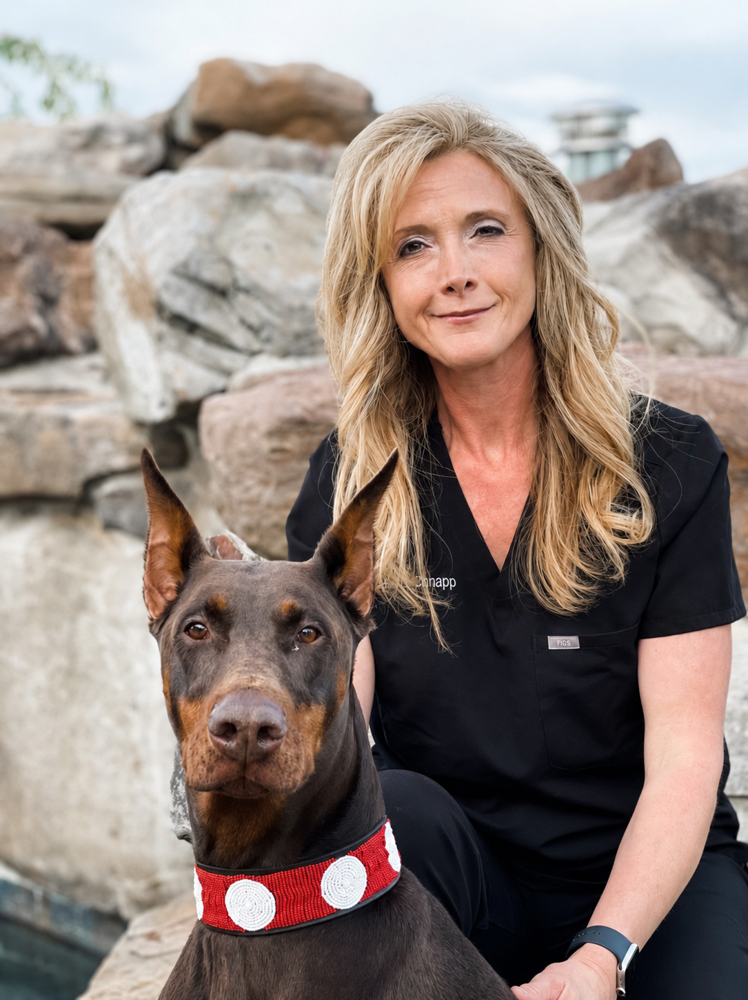
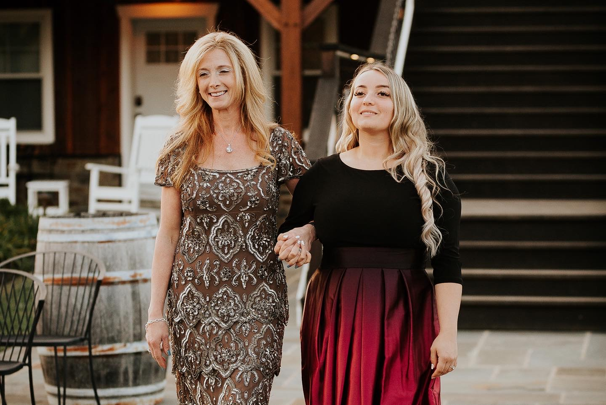

Dr. Debra A. Canapp, DVM, CCRT, CVA, Diplomate of the American College of Veterinary Sports Medicine & Rehabilitation, is internationally recognized as a pioneer in musculoskeletal ultrasound diagnostics for companion and performance dogs.

Dr. Canapp began her journey in sports medicine and rehabilitation with her certification in canine rehabilitation through the Canine Rehabilitation Institute in 2005 — at a time when the discipline was still considered specialty curiosity rather than standard of care.
She has since continued an exclusive career working in small animal sports and rehabilitation medicine. To expand the rehabilitative services available to her patients, she became certified in traditional Chinese veterinary medicine and acupuncture in 2006, and in regenerative medicine (VetStem) in 2007.
In 2010–2011, her interests turned toward diagnostic musculoskeletal ultrasound — the modality that would come to define her practice. She is currently utilizing this tool, as a leader in the small animal field, both diagnostically and therapeutically through ultrasound-guided regenerative medicine injections.
In 2012 she became a board-certified Diplomate of the (then newly recognized) American College of Veterinary Sports Medicine and Rehabilitation. She has been published and lectures internationally on osteoarthritis, sports medicine, regenerative medicine, musculoskeletal ultrasound, and rehabilitation therapy.
"I gravitated toward ultrasound because it's the one modality that lets you monitor the tissue you're trying to heal — in real time."
Canine Rehabilitation Institute, Loxahatchee, Florida.
International Veterinary Acupuncture Society. Integrated immediately into sports medicine practice.
Among the early practitioners adopting regenerative medicine for canine athletes.
Dr. Canapp's focus turns to diagnostic musculoskeletal ultrasound — the modality that will define her practice.
Becomes one of the first small-animal practitioners in North America to integrate MSK ultrasound clinically.
American College of Veterinary Sports Medicine & Rehabilitation — at the inaugural cohort of the new specialty.
Begins lecturing domestically and abroad on MSK ultrasound and sports medicine — a practice that continues today.
The Thinkific-hosted course opens to veterinarians worldwide, with personally-graded homework.
Diagnostic MSK ultrasound by referral, telemedicine reads, and continuing education — reaching veterinarians and patients wherever the work takes her.
Dr. Canapp actively trains veterinarians in rehabilitation medicine and diagnostic musculoskeletal ultrasound through lectures, telemedicine, webinars, and online educational platforms. Her course on Thinkific has reached vets in over 30 countries.

Behind the credentials is a family. For more than fifteen years I've worked alongside my mom in this field — watching her grow, learn, and become the extraordinary veterinarian she is today, and eventually helping bring her course to life for veterinarians around the world.
Bringing her U.S. course to life is one of the proudest things we've done together, and I continue to help her run it, support her students, and keep this practice moving forward.
Getting to do meaningful work beside your mom — for this long, in something you both love so much — is rare. We don't take a day of it for granted.
A practice, a course, a remote-read pathway — all under one clinician who has spent two decades looking exclusively at canine soft tissue.